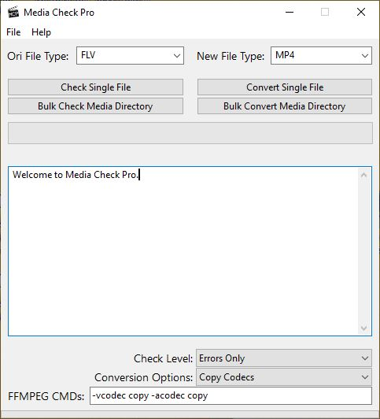

Menu
About
Media Check Pro is a program that utilises FFMPEG to check and convert audio and video files.
MCP provides a simple GUI that lets you easily process your media files. You can check the integrity of a single media file, or you can let MCP scan a folder for any file format and then check every file it finds.
You can convert your files to any format that FFMPEG supports. Popular formats are listed along common conversion options. There is also an option to remux the file to a new container by choosing 'Copy Codecs'.
This program utilises two other applications:
FFMPEG - to check and convert media files
https://ffmpeg.zeranoe.com/builds/
mtee - to read and output stream data for log files
https://ritchielawrence.github.io/mtee/
Screenshots
Versions
| Version | Date | Changes |
|---|---|---|
| 1.1.1 | 2019-06-01 | The first major release of Media Check Pro. |